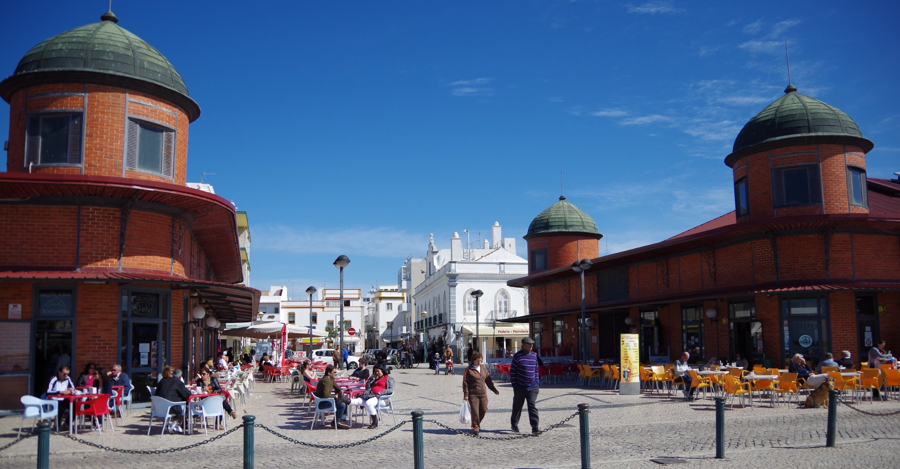
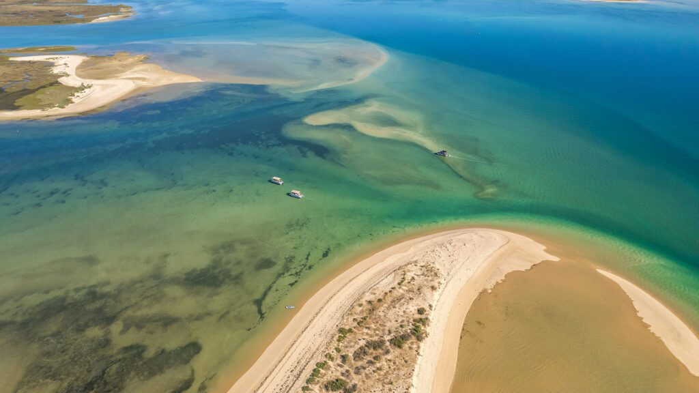
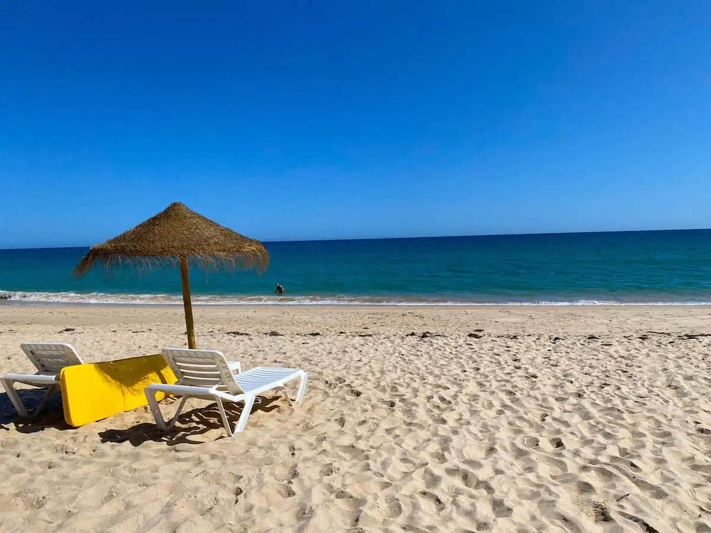
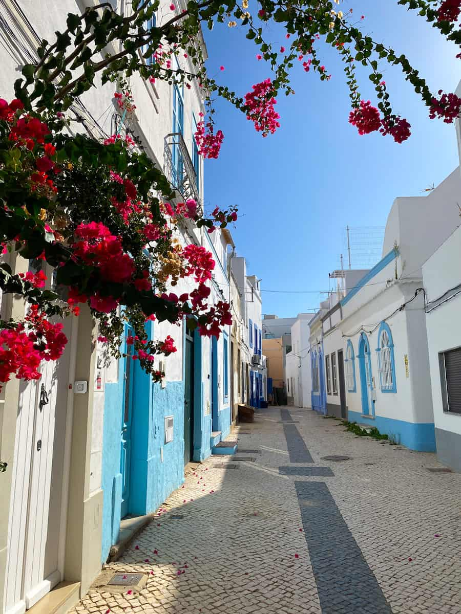
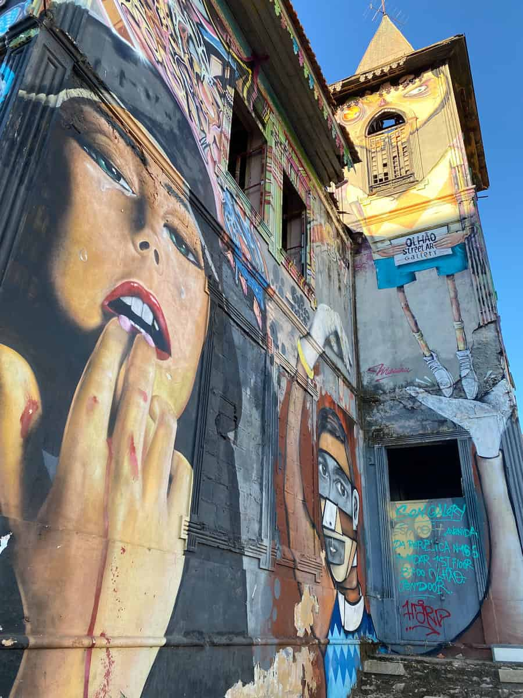
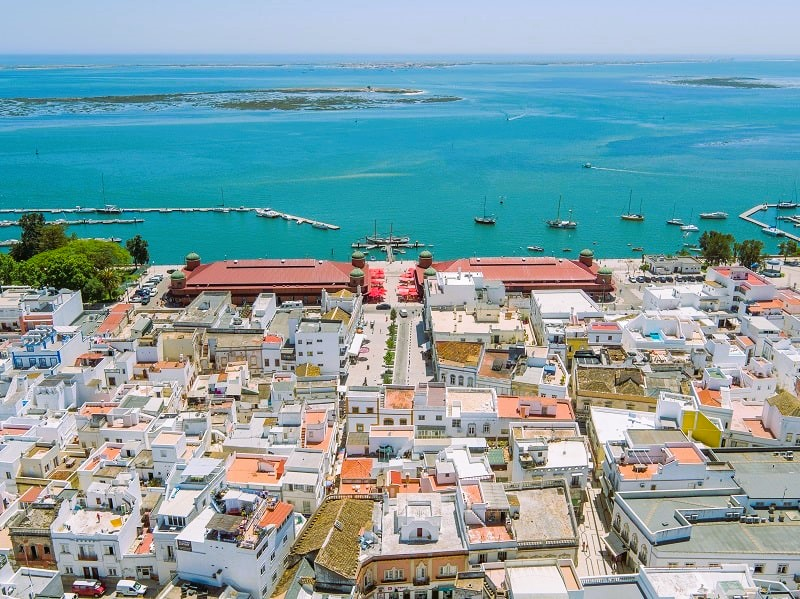

Olhão markets
Start with the waterfront market halls for fish, produce, cafés and local atmosphere.
Casa Rei Azul places you in Olhão city centre, close to the waterfront, the famous market halls and ferries into the Ria Formosa.

Start with the waterfront market halls for fish, produce, cafés and local atmosphere.

Take a boat trip or ferry to the islands and sandbanks of one of Portugal’s most beautiful coastal lagoons.

Spend the day on sandy beaches reached by boat from Olhão, with clear water and relaxed beach restaurants.

Wander whitewashed streets, blue doors, bougainvillea, tiled façades and rooftop terraces.

Explore Olhão’s creative side, galleries, murals and atmospheric backstreets.

A 9 minute walk from the house brings you to the sea-front, cafés, ferries and marina views.
Use Casa Rei Azul as a base for Faro old town, Tavira, the eastern Algarve and longer coastal days towards Vale do Lobo, Albufeira or Lagos.
Old town, marina, restaurants and the airport are a short drive away.
One of the Algarve’s most elegant towns, with river views, Roman bridge and island beaches.
Vale do Lobo, Albufeira and Lagos are possible day trips for beaches, golf, restaurants and coastal scenery.
Stay central, explore the coast, and come home to the rooftop.